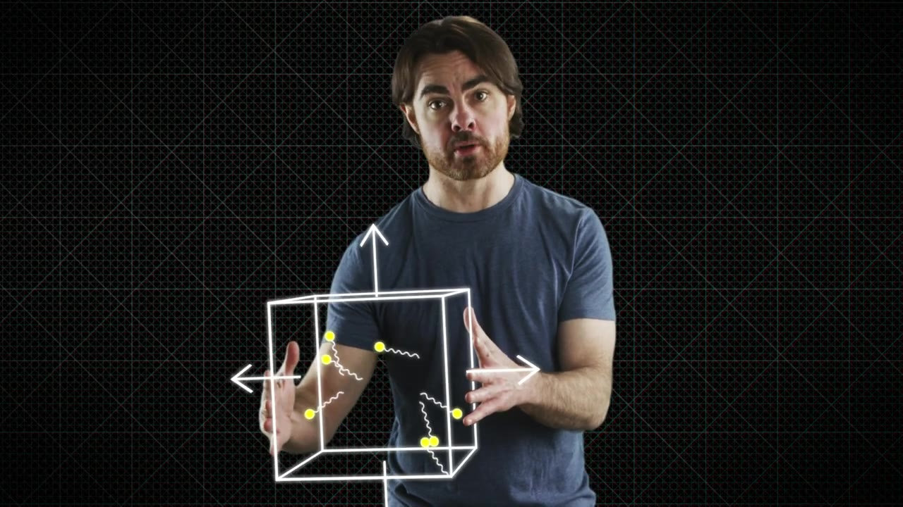
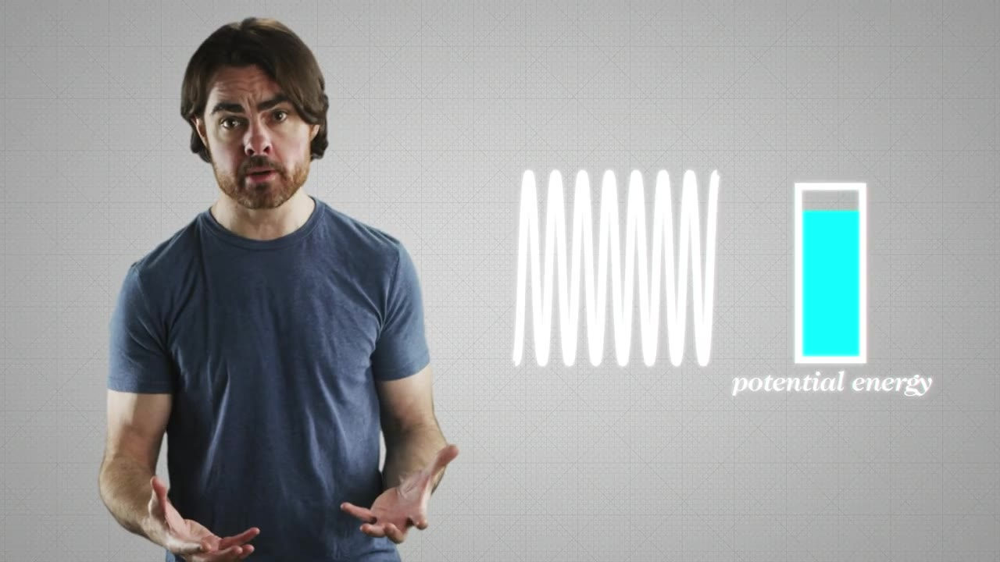
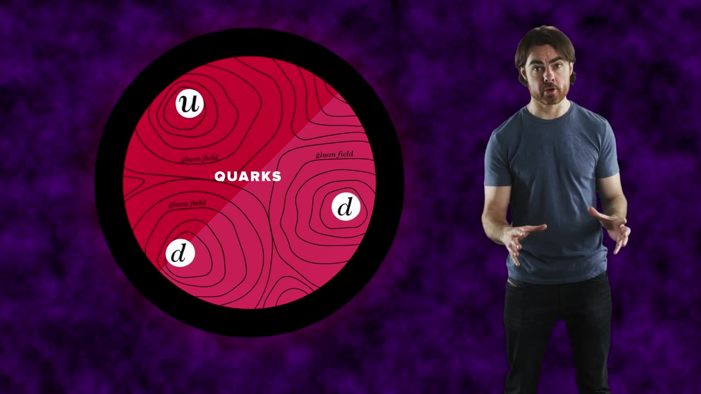
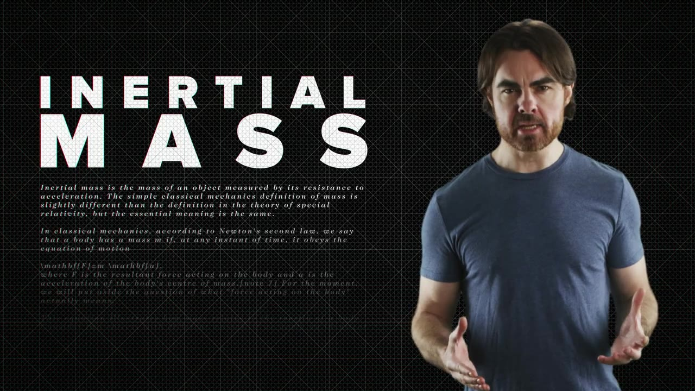
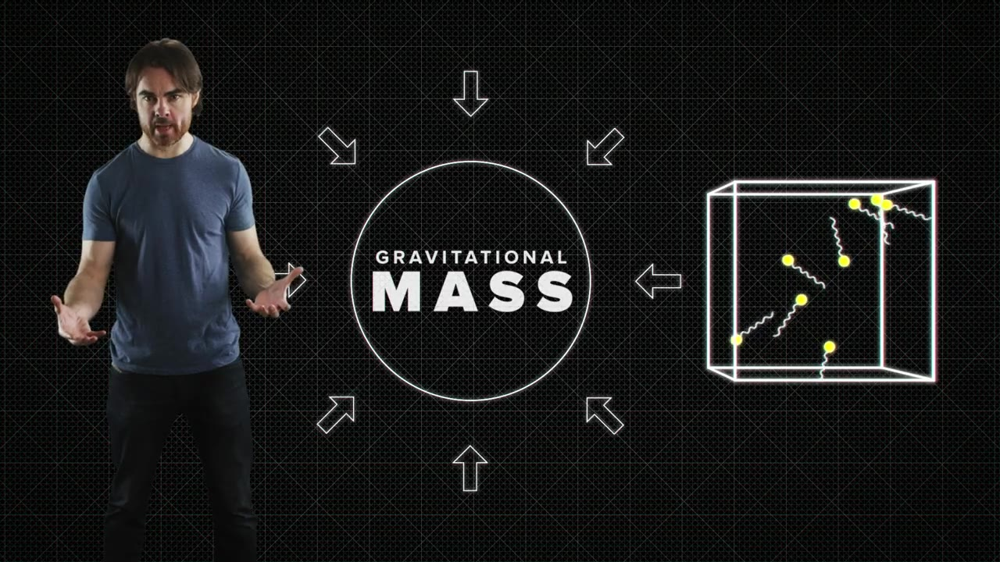
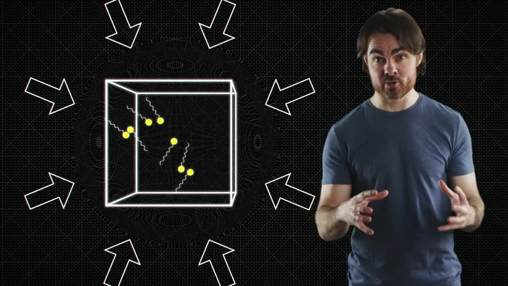

Mass feels like the most solid thing in the universe — but it may be a trick of the light. PBS Space Time shows how trapped massless particles conjure inertia, weight, and even gravity out of nothing but the speed limit of causality.
Watch on YouTubeStart with a thought experiment: a box with perfectly mirrored walls, filled with photons bouncing in every direction. At rest the wall pressure is balanced. But push the box and the rear wall meets oncoming photons head-on, feeling extra pressure, while the front wall outruns them and feels less. The resulting backward force is indistinguishable from inertia.

The photon box has mass, even though its components — neither the photons nor the walls — have mass.— PBS Space Time
The box isn't a special case. A compressed spring stores potential energy, and it's genuinely harder to get moving than a loose one — you have to compress its back end before a wave carries the push through. Same relationship, same E=mc². The common cause: the interactions doing the work (electromagnetic, between atoms) themselves travel at the speed of light.

Now apply it to real matter. Roughly 99% of a proton's mass is the oscillation energy of its quarks plus the binding energy of the gluon field — the quarks' own intrinsic (Higgs-given) mass barely registers. A proton is essentially a photon box plus a compressed spring: up and down quarks bouncing inside a gluon field that acts like a loaded spring.

Kinetic energy of quarks confined in the proton
Potential energy of the field that traps them
Real but negligible for the proton's total
Strip away the Higgs field and quarks and electrons become massless particles racing at light speed. So mass isn't a fundamental substance — it's what happens when intrinsically massless particles and the fields confining them slam into resistance to acceleration. That resistance is inertial mass, and it's a property of the ensemble, not the parts.

Does that emergent mass also weigh something? Yes. Einstein's equivalence principle says feeling acceleration in empty space is fundamentally the same as feeling gravity in a field — so holding the photon box up against 1g must be exactly as hard as accelerating it at 1g. Inertial mass and gravitational mass are one and the same thing.

But mass doesn't simply respond to a gravitational field. She produces one herself.— PBS Space Time
It isn't only mass that curves spacetime — energy flow, momentum, and pressure curve it too. A single photon nudges spacetime; trap a swarm of them in a box and their combined curvature looks exactly like gravity. Massless particles, bound together, generate a genuine gravitational field. Which leaves the cliffhanger: a lone photon's clock is frozen, so where does the box's experience of time come from?
